AI台本生成
Gemini 連携で、資料を渡すだけで台本を自動作成
OFFICIAL MANUAL
スライド資料を、字幕・音声付き動画へ。
スライド資料に AIナレーション音声・リップシンクするキャラクター・BGM・OP/ED を付けて、ブラウザだけで動画に書き出せる SlideCast Studio の公式マニュアル（v3.4 対応）。
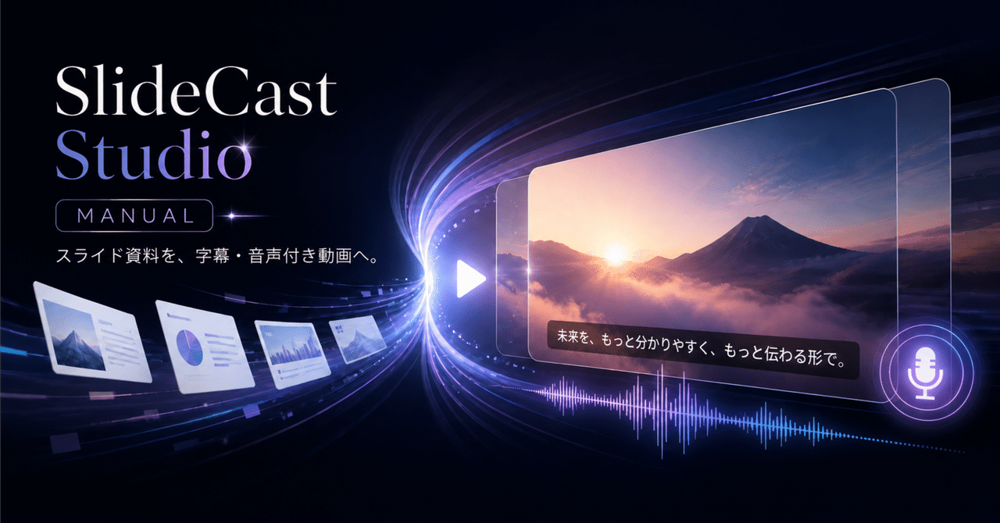
👋 OVERVIEW
更新情報
SlideCast Studio の公式マニュアルへようこそ。
SlideCast Studio は、まじんさんの note を見て魔改造したスライド動画作成ツールです。このツールが作れたのも、まじんさんがプロンプトを公開してくださったからです。
そして私がそのプロンプトを魔改造して、GAS アプリ化したのが SlideCast Studio v1.0。
それを大幅にアップデートしたのが、この SlideCast Studio v2〜 です。
🧭 このマニュアルの読み方
はじめての方は「第3章 Bundle Builder」から読むのが最短です。APIキーの設定なしで、台本づくりから音声生成・ZIP出力までを一気に体験できます。各章の見出しをクリックすると内容が開きます。
SlideCast Studio がどんなツールなのか、何ができるのかをまとめています。
PDF・画像・動画をブラウザに読み込み、AIナレーション音声を付けてそのまま動画化できるアプリです。インストール不要、ブラウザだけで動画が完成します。
Gemini 連携で、資料を渡すだけで台本を自動作成
30種類の声から選べるナレーション（Gemini TTS）。マイク録音・音声ファイル読込にも対応
口パク（リップシンク）・表情・ポーズ仕草・呼吸モーション
Ken Burns のパン＆ズームで静止画に動きをつける
MP4・WebM をスライドとして挿入（再生範囲のトリミング可）
資料なしでタイトル・章区切り・会話シーンを作成
グラデーション・縁取り・影・角丸・バッジ・ロゴ・テロップ
スライド単位で BGM 切り替え＋クロスフェード
切り替え音、音声なし台詞のレトロ風テキスト音
音声・動画・間を秒単位で調整
スライド画像＋字幕が一体化した A4縦形式
イントロ・アウトロ動画を書き出し時に本編の前後へ自動結合
動画の書き出しはあなたのパソコン上で行われます。快適に使うための目安をまとめました。
動画のレンダリングはあなたのパソコンのブラウザメモリを使用します。
| 搭載メモリ | 720p | 1080p | 1440p |
|---|---|---|---|
| 8GB | 20〜40枚程度 | 10〜20枚程度 | 非推奨 |
| 16GB（推奨） | 50〜100枚程度 | 25〜50枚程度 | 10〜20枚程度 |
| 32GB | — | 50〜100枚程度 | 20〜40枚程度 |
出力解像度は 720p / 1080p / 1440p の3種類です（16:9 なら 1280×720 / 1920×1080 / 2560×1440）。
出力した動画がカクつくと感じたら
動画書き出し時はブラウザメモリを使うので、他の作業は一旦中断してください。余計なタブなども閉じておいた方が、出力される動画の品質も上がります。
APIキーの設定なしで動画制作をスタートできる、専用の補助ツールです。
Bundle Builder は、「APIキーの設定なしで動画制作をスタートできる」専用の補助ツールです（Google Gemini Canvas 上で動く単体アプリ）。ステップ形式のウィザードで、台本生成からAI音声合成・ZIP出力までをガイドします。
ダッシュボードの Bundle Builder カード（「まずはここから」バッジ付き）から開けます。
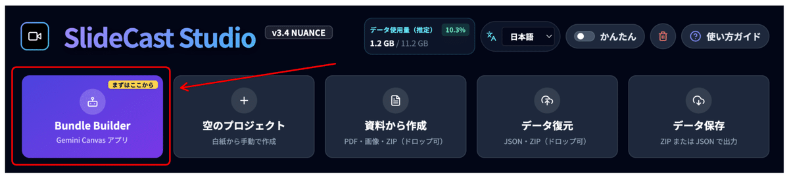
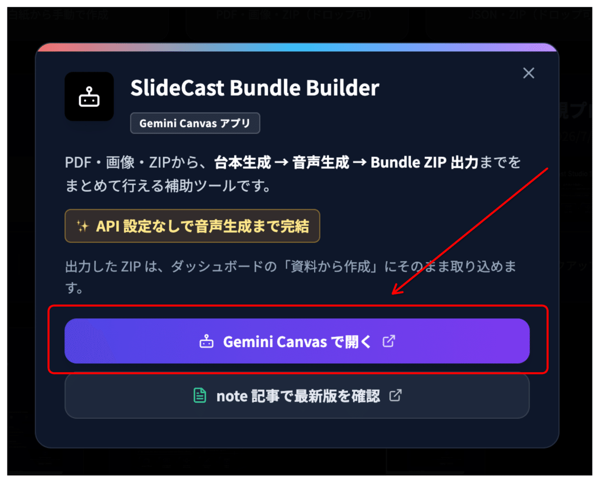
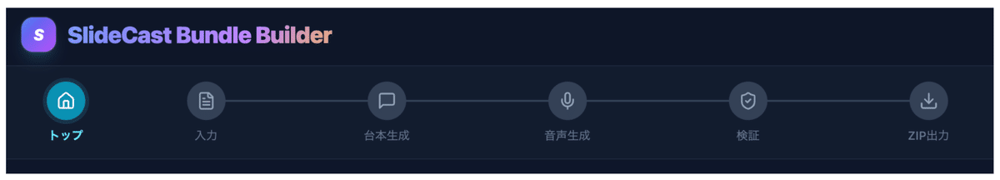
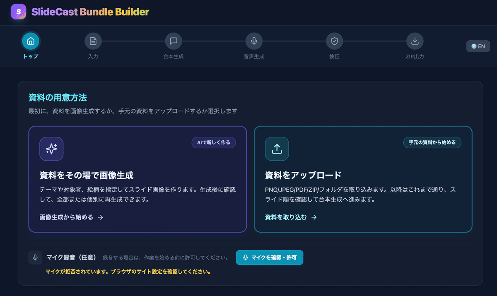

ダッシュボードの「資料から作成」に、出力した ZIP をそのままドロップまたは選択するだけです。あとはエディタでデザインと演出を整えて書き出します。
保存先とデータが消えるケース、APIキーの取り扱いについて必ず確認してください。
すべてのプロジェクトデータは「あなたのブラウザ内（IndexedDB）」に保存されます。外部サーバーへのアップロードは行いません。
🆘 復元はできません
一度消えたデータをアプリ側で復元することはできません。定期的なバックアップが唯一の対策です。
⚠️ 漏洩リスク
万が一 APIキーが漏洩し不正利用されると、高額請求につながるリスクがあります。
プロジェクトの作成・複製・バックアップ・初期化はすべてダッシュボードから行います。
ダッシュボード上部に、ブラウザ内のデータ使用量（推定）が表示されます。上限に近づいてきたら、不要なプロジェクトを削除するか、バックアップして退避しましょう。
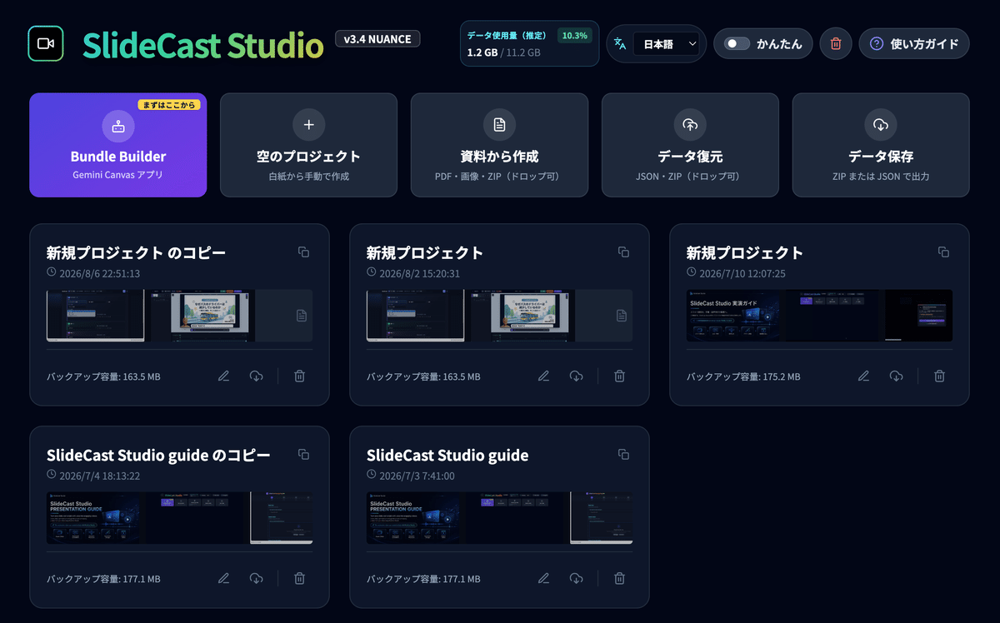
資料から作成（推奨）：PDF・PNG・JPEG・ZIP（またはフォルダ）を選択またはドラッグ＆ドロップ。多ページの資料は数分かかることがあります。v3.4 では取り込み前に取り込み画質を選べます（第7章）。
空のプロジェクトを作成：ゼロからスタートしたい場合に使用。後から素材を追加できます。
カードには実データ目安と個別バックアップの見積り容量が表示されます。
「データ保存」ボタンから、含める項目を選んで ZIP を書き出せます。選べる項目は次のとおりです。
推定バックアップサイズが表示され、安全／注意／危険の3段階で警告します。危険水準では復元に失敗する可能性があるため、プロジェクトは個別バックアップを推奨します。
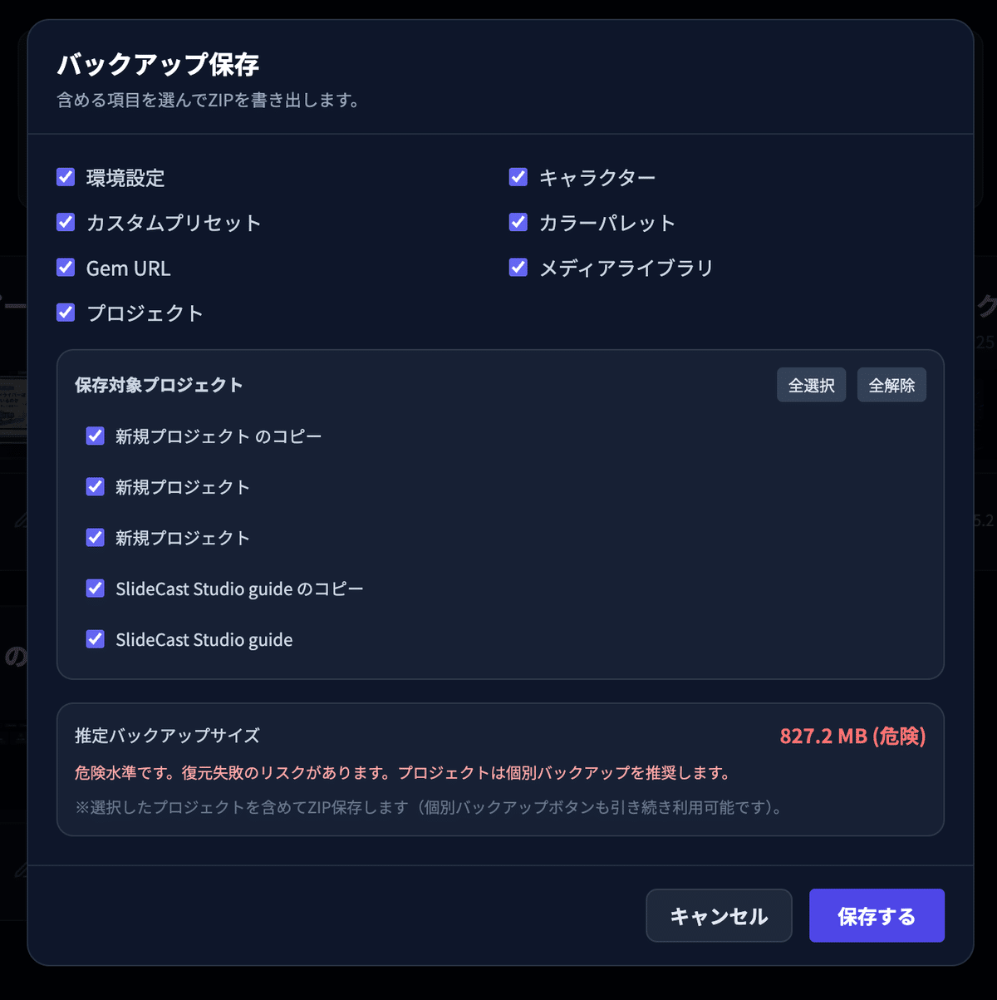
復元（インポート）：ダッシュボード上部の「データ復元」ボタン → JSON または ZIP を選択・ドロップ。同名キャラ・同一プロジェクトが見つかった場合の動作を選べます。
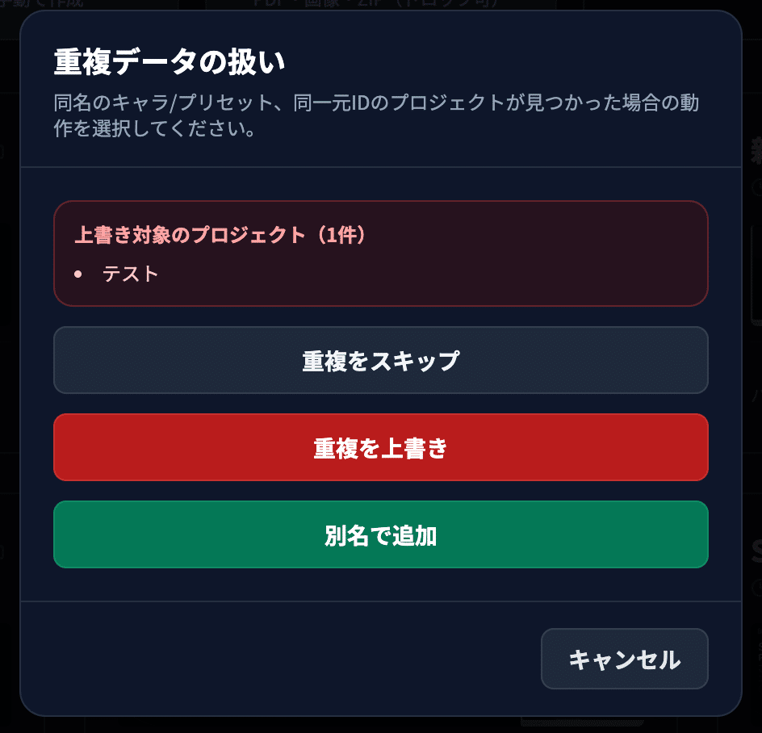
「データ初期化」では、削除するカテゴリをチェックで選べます。
⚠️ 削除は元に戻せません
削除前にバックアップを開くボタンが用意されています。削除したデータは元に戻せません。
画面は4つのエリアに分かれています。まずは全体の位置関係をつかみましょう。
① ヘッダーエリア（上部）：ダッシュボードに戻るボタン、プロジェクト名（クリックで変更）、⚙️設定ボタン、統計情報（推定再生時間・推定ファイルサイズ）、台本・一括生成・スライド出力・動画書き出しボタン、全体再生ボタン、保存状態（未保存／保存済）
② サイドバー（左側）：スライドのサムネイル一覧。ドラッグ＆ドロップで並び替え、画像・動画・PDF・ZIP をドロップして一括追加、ホバーメニューから画像変更・TTS生成・複製・削除。サムネイルの間には切り替え効果の境界バッジ（全体／個別）が表示されます。幅はドラッグで変更できます。
③ プレビューエリア（中央）：リアルタイムでキャンバスを表示。プレビュー背景は明／中／暗から選択。境界線をドラッグしてエリアサイズを調整。再生コントロール（▶ / ⏸ / シークバー）と「タイミング調整」ボタンがあります。
④ 台本エディタ（下部）：スライドごとのセリフ・字幕を入力。複数キャラクターの掛け合い、演技（表情・ポーズ）設定、スライド内タイムラインもここにあります。
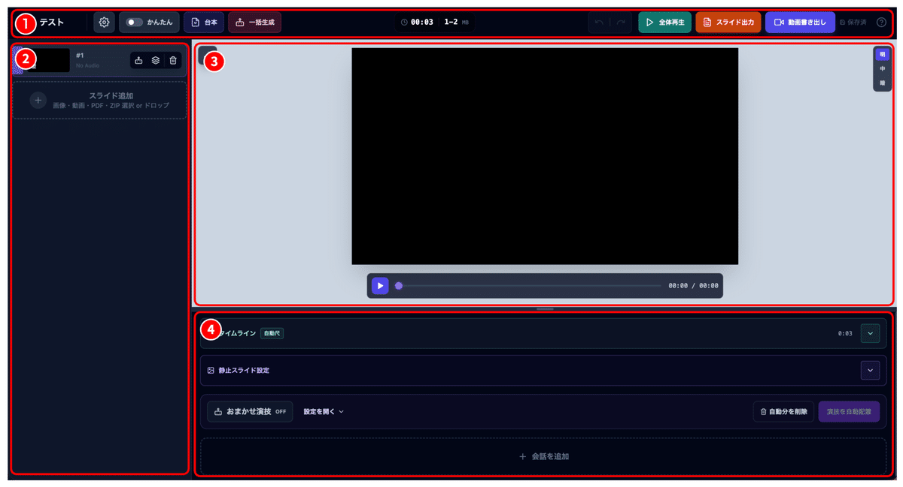
設定項目が多すぎると感じる方向けに、「かんたん」スイッチを用意しています。ONにすると、必要最小限の設定だけが表示され、その他はおすすめの内容で自動設定されます。かんたん設定で調整できるのは次の項目です。

細かく調整したくなったら、スイッチをOFFにすれば通常モードに戻ります。
資料の取り込み画質、空のスライド、動画スライドまで、スライドまわりの操作をまとめます。
サイドバー下部の「スライド追加」から、または画像・動画・PDF・ZIP をサイドバーへドラッグ＆ドロップして追加できます。PDF は全ページが自動的に画像化されます。
資料を取り込むときに、画質プリセットを選べます。
⚠️ 元データが上限です
元画像や元PDF以上の解像感にはなりません。高い画質を選んでも、元データが低解像度ならその範囲が上限です。
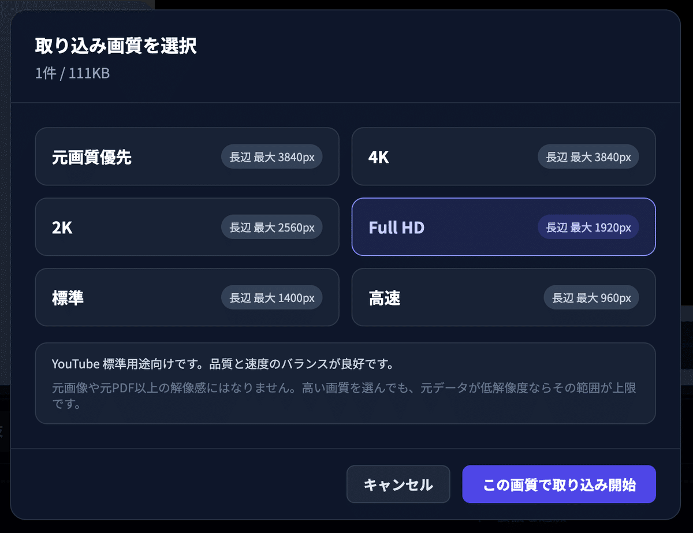
「スライド追加」→「空のスライドを追加」で、資料を持たないスライドを1枚追加できます。
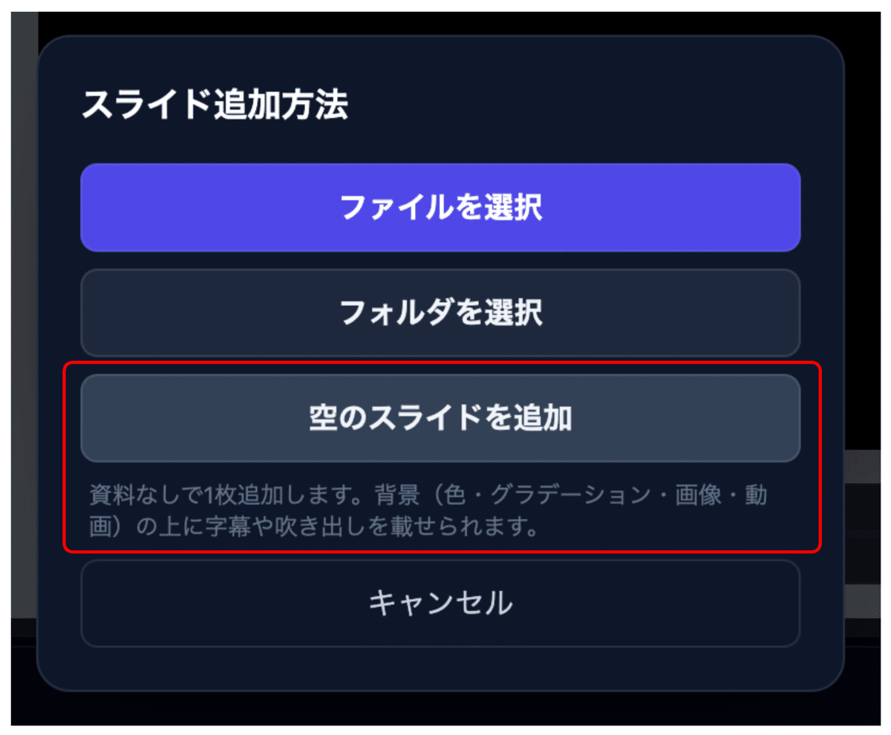
プロジェクトの背景（単色・グラデーション・画像・動画）の上に、字幕・キャラアイコン・吹き出し・テロップ・バッジを載せられます。こんな用途に向いています。
あとから画像を設定すると、通常の画像スライドへ切り替わります。Ken Burns は画像に対する演出のため、空のスライドでは表示されません。プレビュー・トランジション・スライド画像出力には対応しています。
サムネイルはドラッグ＆ドロップで並び替えできます。ホバーで表示されるメニューから、次の操作ができます。
台本エディタの「静止スライド設定」で、表示時間を切り替えられます。
スライドごとの動き（Ken Burns）と強さも、ここで個別に設定できます。
MP4・WebM をスライドとして挿入できます（上限200MB / 10分）。音声モードは3つです。
このほか、次の設定ができます。
💡 補足
動画スライドに Ken Burns は適用されません。
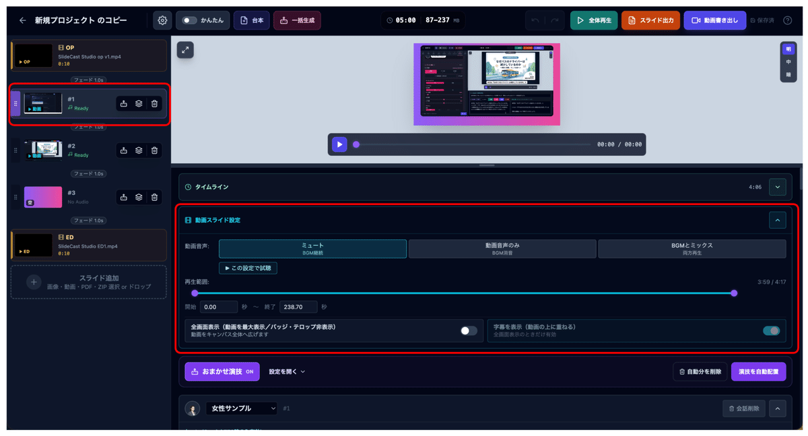
台本の生成・編集から、AI音声・外部音声・マイク録音までを扱います。
ヘッダーの「台本」ボタンから、台本まわりの操作をまとめて開けます。
生成タブでは、対象・スタイル・長さ・話者数・字幕ページ行数・字幕レイアウト・台本言語・ふりがな補助・生成モデル・TTS方式・リサーチ有無などを指定できます。
その場で生成せず、外部AI用プロンプトを表示して ChatGPT / Claude / Gemini などに資料と一緒に渡し、返ってきた JSON を「読み込み」タブでインポートすることもできます。
⚠️ 動画スライドは対象外
動画スライドは台本生成の対象外です（静止スライドにのみ順番通りセットされます）。
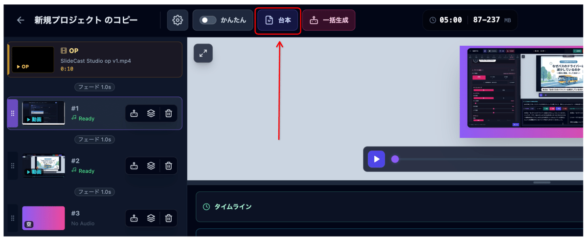
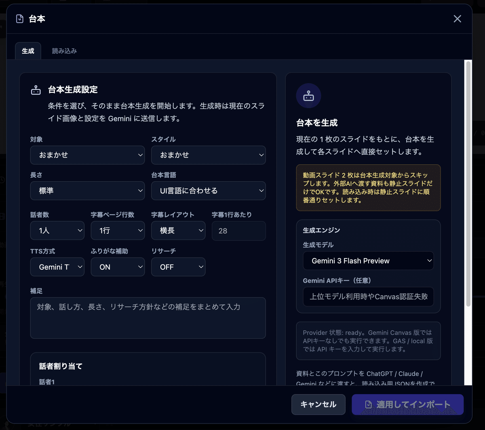
各スライドには複数の「台本ブロック」を追加できます。
TTS原稿（左側）：AIが読み上げるテキストです。Gemini TTS では、難読漢字はひらがなや（）でふりがなを添えると正確に読まれます。読点（、）で自動的に間が空きます。
表示字幕（右側）：画面に表示されるテロップです。空欄の場合は TTS原稿がそのまま表示されます。改行で同時表示、空行（改行2回）でページ送りになります。
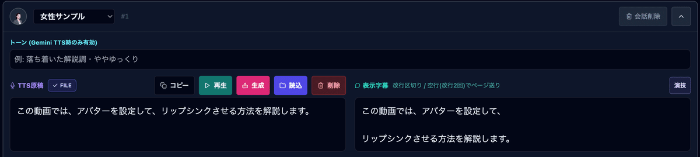
台本ブロックごとに、次の「間」を秒単位で指定できます。
個別指定はワンクリックで共通設定に戻せます。
ブロックごとに生成：「生成」ボタンをクリック → 数秒で「AI生成済み」の緑バッジが表示されます。
全スライドを一括生成：ヘッダーの「一括生成」から、「すべて生成（既存の音声も上書き）」または「未生成のみ（既存の音声を保持）」を選びます。進捗と残り時間が表示され、「緊急停止」でいつでも止められます。エラーが連続した場合は自動停止し、生成済みの音声は保持されます。
⚠️ 無料枠の上限に注意
Gemini の無料枠は「1分あたり」だけでなく「1日あたり」のリクエスト回数にも制限があります。上限に達した場合は、Google AI Studio の Playground で音声を作ってアップロードする方法もあります。
Gemini TTS 使用時は、各台本ブロックの「トーン」欄に話し方を指定できます。「落ち着いた解説調・ややゆっくり」「明るく元気に」「驚いたように」などを入力します。
MP3・WAV などを台本ブロックにドラッグ＆ドロップ、または「読込」ボタンからファイルを選択できます。
台本の各行の「録音」ボタンから、録音 → 試聴 → 採用ができます（トリミング付き）。
ℹ️ 版による違い
録音ボタンは GAS版では表示されません。またローカルHTML版では TTS 機能は使わない想定のため、音声設定は BGM のみ表示されます（録音・音声ファイル読込は使えます）。
スライドの中身を時間軸で確認し、秒単位で追い込むためのビューです。
台本エディタの「タイムライン」では、そのスライドの中身を時間軸で確認・調整できます。トラックは3本です。
ドラッグでできる調整は次のとおりです。
表示時間は「自動尺」「手動尺」のバッジで判別でき、「自動に戻す」でいつでも戻せます。音声同士が重なっている場合は「重なり」バッジが出ます。

プレビュー上部の「タイミング調整」を押すと、プレビューを大きくして追い込めます。
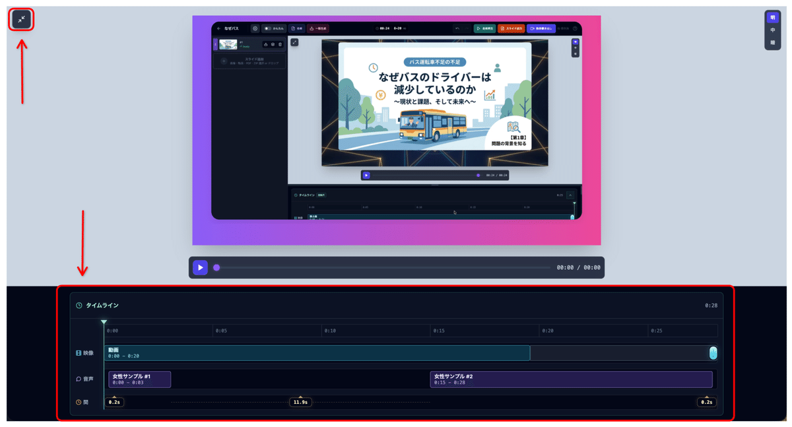
設定モーダルは 基本 / 字幕 / 演出 / BGM / バッジ / テロップ / 音声 / キャラ / OP・ED のタブに分かれています。設定は自動保存・即時反映です（キャラ編集だけは「保存する」で反映）。
よく使うブランドカラーやキャラクターカラーを登録しておくと、プロジェクト間で一貫した配色が保てます。単色・グラデーションの両方を登録できます。
背景画像・背景動画はライブラリに保存でき、別プロジェクトからワンクリックで呼び出せます。
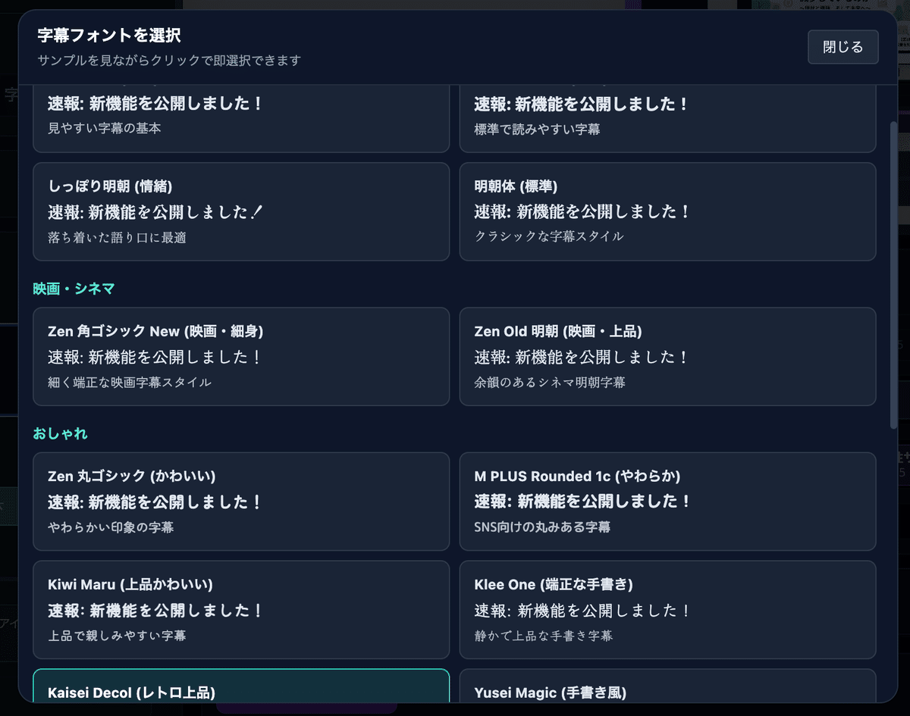
v3.4 では、字幕設定を開いている間、キャンバスに「字幕設定プレビュー」が表示されます。フォント・サイズ・色・縁取り・影・エリア高さの変更をその場で確認できます。

静止画にゆっくりしたパン・ズームを加える演出です。用意しているプリセットは、なし／ズームイン（中央）／ズームアウト（中央）／左→右パン／右→左パン／上→下パン／左上ズームイン／右下ズームイン／絵本ゆらぎ／衝撃ズーム／衝撃ゆれ／ポップ開始／波ゆらぎ です。
スライドごとの個別設定も可能です。
⚠️ プレビューは静止表示
エディタのプレビューは静止表示です。動きは再生・書き出しで確認してください。動画スライドには適用されません。
切り替え時間は秒単位で設定できます。「OP/ED動画の境界にも適用」をONにすると、OP→最初のスライド、最後のスライド→ED も同じ効果でつながります。
サイドバーのスライドとスライドの間にある境界バッジ（「全体」／「個別」）をクリックすると、その境界だけ設定を上書きできます。
「すべてリセット」で全体設定に戻せます。
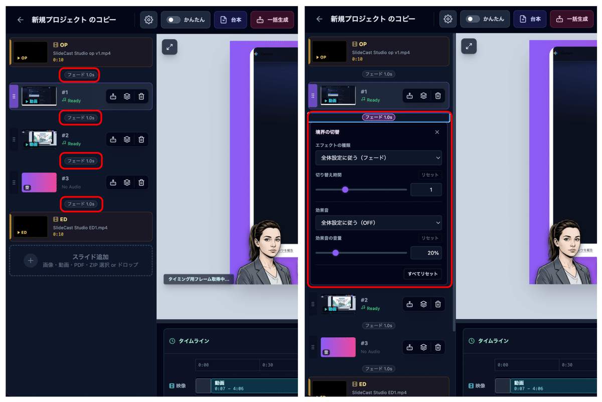
ビルトイン音は、絵本ページめくり／薄いページめくり／ページめくり（旧）／シネマティック／シマー（きらめき）／ソフト・ウーッシュ／紙スワイプ です。
MP3 などを追加してカスタム音にもできます（上限5MB）。アップロードした音はライブラリに保存され、別プロジェクトでも呼び出せます。
音声が未設定の台詞に、レトロRPG風の短い音を重ねる機能です。
実音声がある台詞、空の台詞、会話の間では鳴りません。
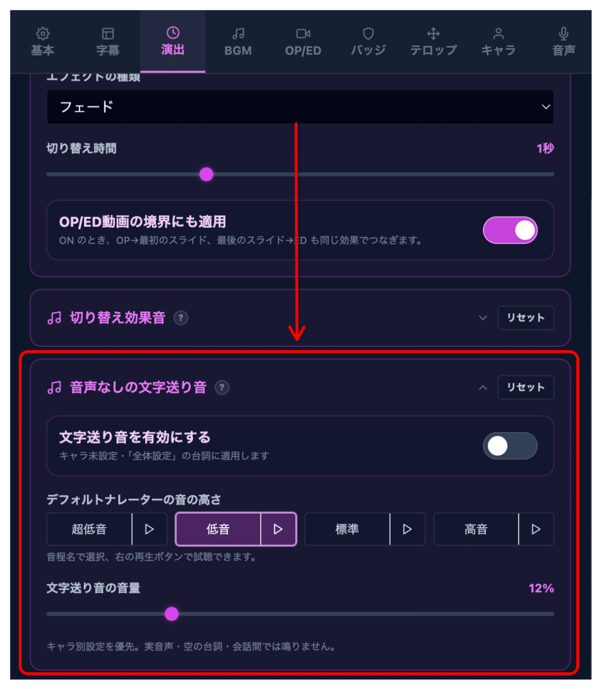
いずれも台本ブロック側で個別に上書きできます（第8章）。
四隅それぞれに、ロゴやテキストバッジを独立して配置できます。
アプリで作成：複数行テキスト、文字揃え、文字色・影・枠線、背景（単色／グラデ／透明）、形（四角／角丸）、影、枠線
画像アップロード：透過PNG などのロゴを配置。サイズ・影を調整
バッジ画像もライブラリに保存できます。
⚠️ 利用上の注意
他サービスのウォーターマークを隠すような使い方は規約違反になる場合があります。
画面を横切るように流れる帯状の装飾です。上部テロップ／下部テロップを独立して設定できます。
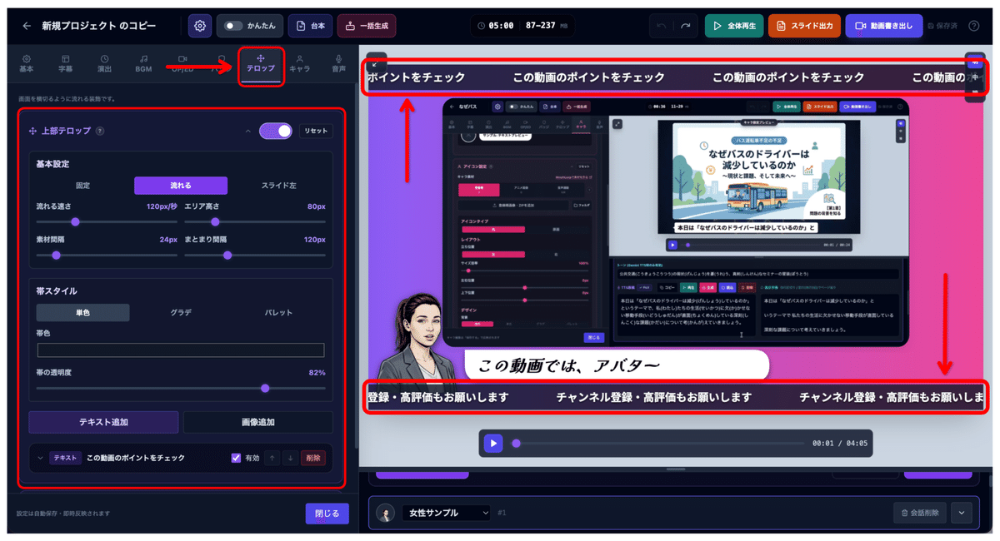
v3.4 でキャラ設定は大きく変わりました。項目は キャラ素材・動き / レイアウト / デザイン の3グループに整理され、グループごとに初期値へ戻せます。
設定 → キャラ → 「新規作成」から作成します。名前、スタイル（吹き出し／標準字幕／帯）、フォント、文字の太さ・斜体などを設定します。
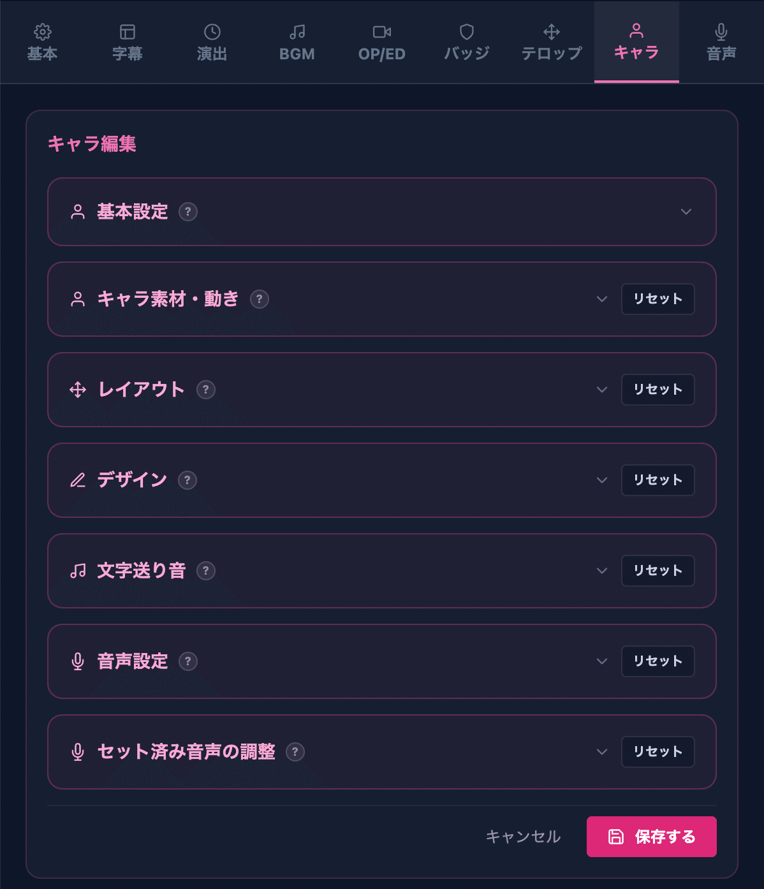
登録できる画像は3つの方式に分かれています。上部のタブで切り替えます。
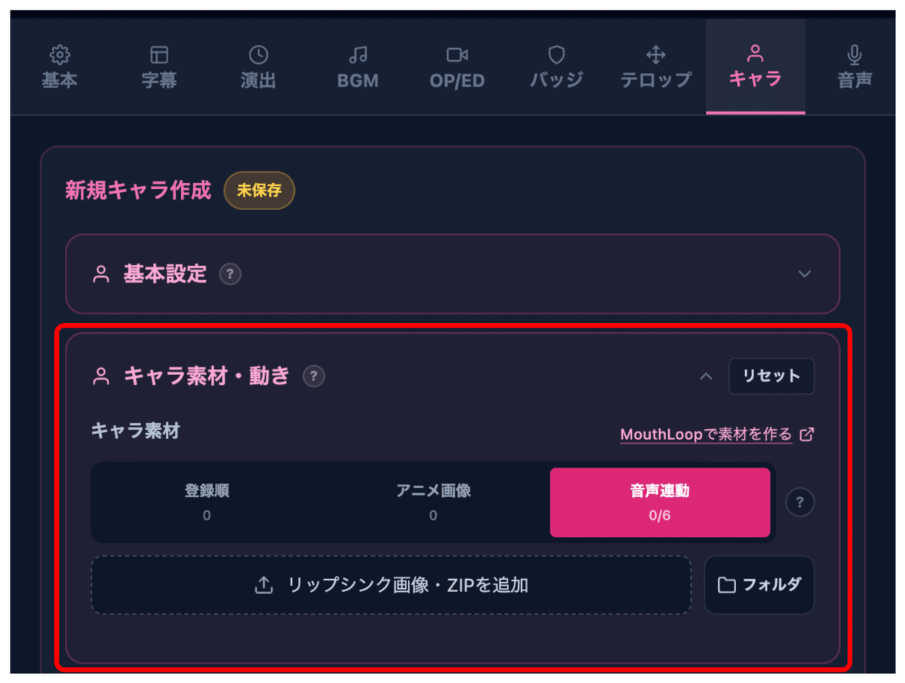
登録順アニメーション：静止画を複数枚登録すると、話している間に登録順で切り替わります。2枚からでも使えます。カードをドラッグ、または矢印ボタンで並び替えできます。
1ファイルアニメ：GIF / アニメーションWebP / APNG を1ファイル登録すると、話している間そのアニメーションが再生されます。再生速度も調整できます。
6枚リップシンク：6枚の静止画を、ナレーションの音量に合わせて切り替えます。6枚の役割は固定です。
画像にマウスを重ねると出る「差し替え」から、1枚だけ入れ替えることもできます。

リップシンク間隔は「自動（推奨）」が標準です。セリフごとに音声尺と字幕量から発話速度を推定します。合わないと感じたときだけ「手動」でスライダー調整してください。
💡 3方式の素材は別々に保存されます
方式を切り替えても前の素材は消えないので、試して戻すのが気軽にできます。
ZIP の中身はファイル名順に読み込まれます。01.png〜06.png のように番号を振っておくと確実です。
MouthLoop は、1枚の画像から口パク素材を自動生成する別アプリ（Gemini Canvas 上で動作）です。キャラ設定の「MouthLoopで素材を作る」リンクから開けます。
キャラパックZIPは自動検出され、読み込み前に画像数・展開サイズ・保存容量の概算・含まれる表情・含まれるポーズ仕草が表示されます。空き容量が少ない場合は警告が出ます。通常の画像ZIPとキャラパックは自動で判別されるため、読み込み方法を切り替える必要はありません。
表示字幕の中から演技を入れたい文字を選択すると、「演技を追加」ボタンが表示されます。そこから表情とポーズ仕草を設定できます（同時指定も可能）。
設定済みの演技は台本欄の下に一覧表示され、あとから編集・解除できます。対象の文章を大きく書き換えた場合は、位置ずれを防ぐため演技設定が自動的に解除されることがあります。

「おまかせ演技」をONにして「演技を自動配置」を押すと、セリフの区切りに合わせて表情や仕草が配置されます。
「ありがとう」「残念」など内蔵ワードに合った表情が優先されます。生成AIで解析しているわけではないため、追加のAPI通信・API料金は発生しません。
自動配置された演技には「自動」マークが付き、「自動分を削除」で自動配置分だけを消せます（手動設定は残ります）。まず自動で配置して、気になる部分だけ手で直す使い方がおすすめです。

ℹ️ タイミングについて
演技のタイミングは、選択した文字の位置と音声の長さから計算しています。音声認識で単語の発音時刻を取得しているわけではないため、単語単位で完全に同期するものではありません。演出としてお使いください。
静止画のキャラアイコンにも動きを付けられます。
設定は なし／弱／標準／強 の4段階です。新しい画像素材は不要で、プレビューと書き出しで同じ動きになります。既存キャラは「なし」のままなので、これまでのプロジェクトの見た目は変わりません。
ℹ️ 動きの範囲
動くのはアイコン全体の上下とわずかな伸縮だけです。傾きや、手を振るなど絵そのものが変わる動きはしません。
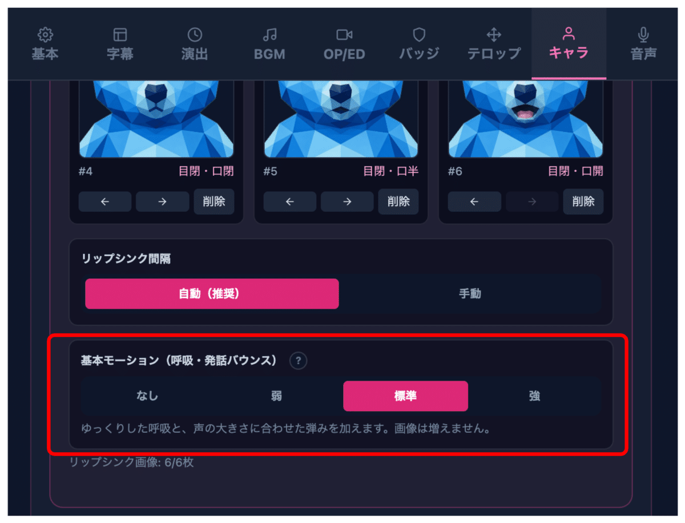
アイコンの大きさは2方式から選べます。
吹き出しの高さも2方式です（字幕エリアに合わせる／文字に合わせる＝行数に応じて伸縮）。このほか、次の調整ができます。
💡 v3.3以降
キャラの左右位置を動かすと、吹き出しも同じ量だけ一緒に移動します。位置関係が保たれるので、一度きれいに配置すれば全体をまとめて動かせます。
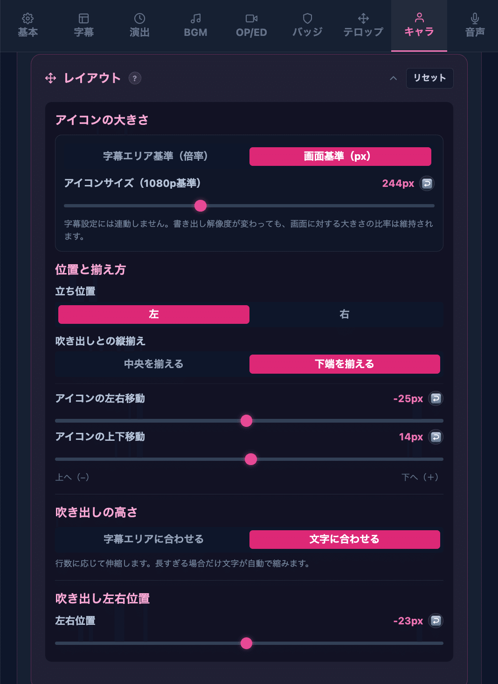
画面の左側または右側に配置できます。対話形式のコンテンツでは左右に分けると自然に見えます。
Gemini TTS（Gemini APIキー使用時） — 30種類の声から選べます。
試聴ボタンでサンプルを再生できます（※試聴もAPI容量を消費します）。
Google Cloud TTS（Google Cloud APIキー使用時） — Neural2 / WaveNet の声を選択し、速度・ピッチを調整できます。
生成済み・録音済み・アップロード済みの音声に対して、あとから速度・ピッチを適用できます。
ℹ️ 試聴だけでは保存されません
試聴だけでは保存音声とタイムラインは変更されません。
「AさんのセリフをBさんに変更したい」ときに使います。置換元・置換先を選んで「実行する」で全スライドをまとめて置換。セット済み音声を保持するかも選べます。
スライド単位で BGM を切り替え、クロスフェードでつなげます。
MP3 をドロップするか、「BGM を追加」から読み込みます。既定音量を決めておき、トラックごとに個別音量を上書きできます。BGM の尺より動画が長い場合は自動的に繰り返し再生されます。
BGM は最大 10トラック まで登録でき、それぞれ「再生開始スライド」を指定します。切り替えのタイミングではクロスフェードが適用され、フェード時間も秒数で設定できます。
例：イントロは落ち着いたBGM → 説明パートから明るいBGMへ自動切り替え。各トラックの担当範囲（スライド〇〜〇）は一覧で確認できます。
アップロードした BGM はライブラリに保存でき、別プロジェクトからワンクリックで呼び出せます。
💡 動画スライドとの関係
動画スライドで「動画音声のみ」を選んだ区間は、BGM が自動的に消音されます。
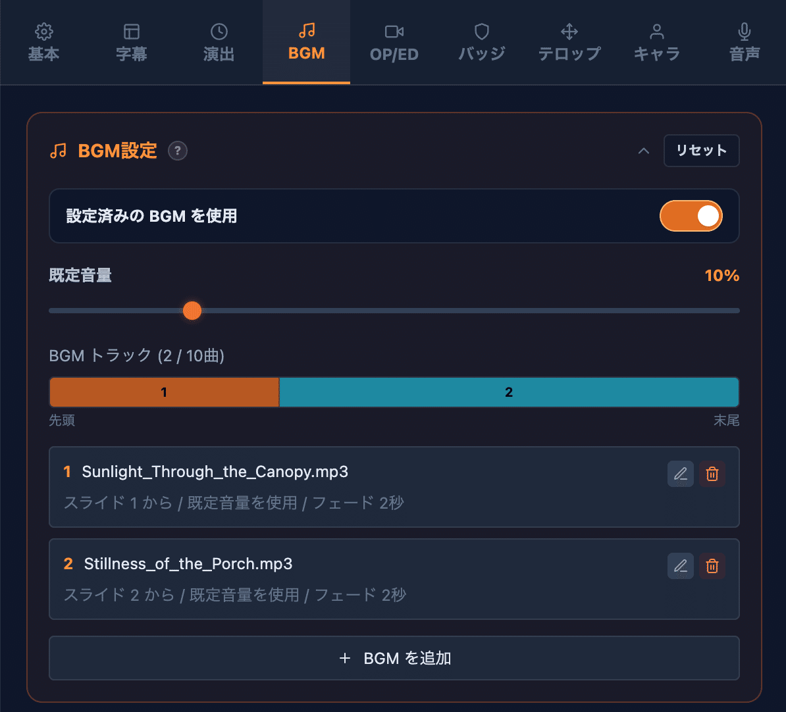
チャンネルのイントロ・アウトロ動画を、書き出し時に本編の前後へ自動結合します。
チャンネルのイントロ・アウトロ動画を設定しておくと、書き出し時に本編の前後へ自動で結合されます。対応形式は MP4・WebM（容量500MB以内、秒数制限なし）。動画サイズ（16:9 / 9:16 / 1:1）ごとに個別設定・保存が可能です。
映像プレビューでその場に確認できます。
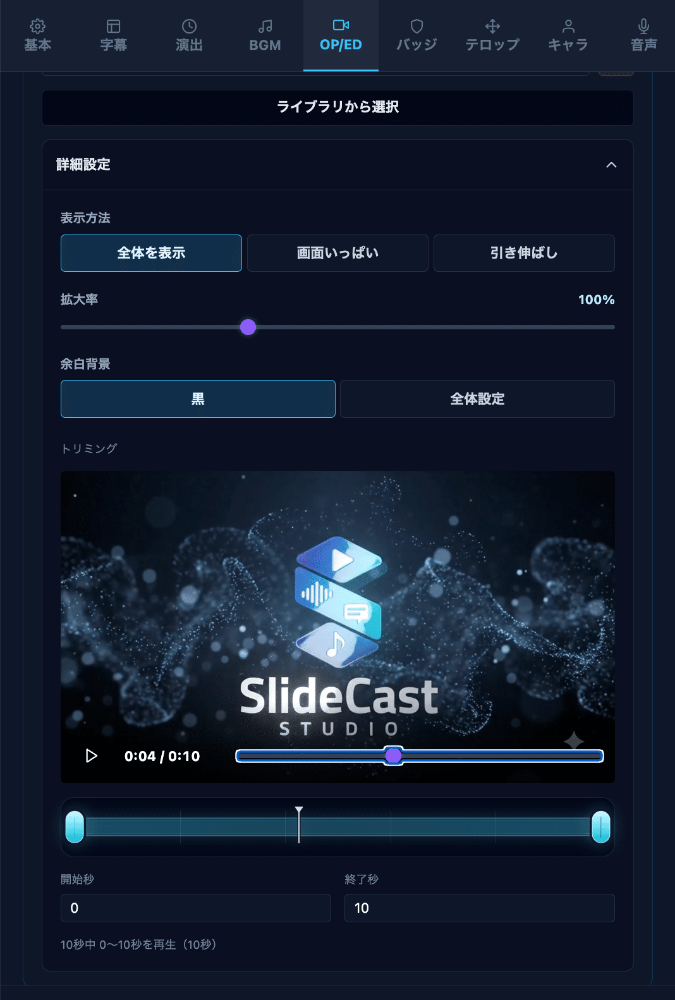
一度アップロードした OP/ED 動画はライブラリに保存され、次のプロジェクトでもワンクリックで適用できます。
Bundle Builder を使わず、自分でAPIキーを設定してエディタから音声生成したい方向けです。
設定画面では次の操作ができます。
Gemini モデル（TTS対応）は次から選べます。
⚠️ 無料設定のままだと Pro TTS は失敗しやすい
無料利用設定のままでは Pro TTS は失敗する可能性が高いため、Flash TTS を使うか有料プランを有効にしてください。
感情表現は控えめですが、均一で安定した音声を使いたい場合に追加設定します。
動画（MP4・WebM）と、PPTX / PDF / 画像 の書き出しについてまとめます。
「動画書き出し」を押すと、確認画面で次を選べます。
フレームレートは30fps、想定サイズの目安も表示されます。
ℹ️ MP4 非対応ブラウザについて
MP4 はブラウザによって非対応の場合があり、その場合は自動的に WebM へ切り替わります。
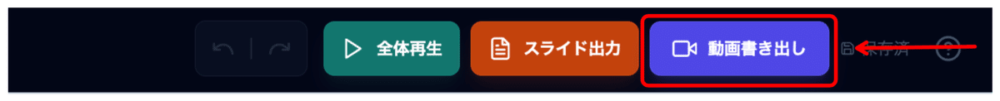
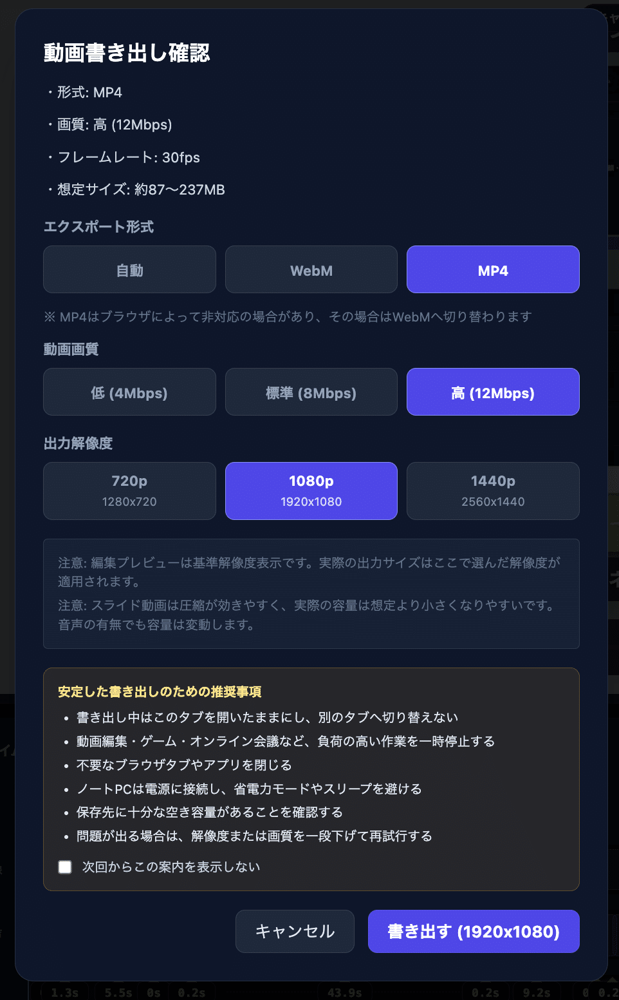
メモリ使用率が高い場合は、書き出し前に警告が表示されます。
⚠️ MP4互換性について
MP4 で書き出しても、そのまま投稿できない場合があります。規格が異なると SNS 側が対応していないことがあるため、必要に応じて H.264 へ変換してください。
「スライド出力」からは次の形式を選べます。
さらに、次の設定ができます。
A4縦に「スライド画像＋字幕テキスト」を配置した資料PDFです。字幕が長い場合は自動でページ分割されます。
印刷して配布する資料・セミナーのハンドアウトに最適です。
ℹ️ 動画スライドの扱い
動画スライドは最初のフレームを静止画として書き出します。動画そのものは含まれません。
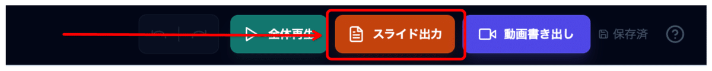

よくある症状と対処法をまとめています。
最新版へ差し替えるときの手順です。
SlideCast Studio を購入済みの方は、これまでと同じ有料noteの共有リンクから最新版をコピーしてご利用ください。
既存のプロジェクトやライブラリ、設定を引き継ぎたい場合は、念のため先に「データ保存」からバックアップを作成してください。
GAS版を同じURLのまま更新する場合は、既存のGASプロジェクトにある次の2ファイルを最新版のファイルへ差し替え、既存のデプロイを「新バージョン」として再デプロイします。
ローカルHTML版を使用する場合は、「SlideCast Studio〖ローカル版〗.html」をダウンロードして開いてください。
⚠️ データの引き継ぎ
新しいGASプロジェクトや別のブラウザで開いた場合、以前のデータは自動では表示されません。その場合はバックアップから復元してください。
SlideCast Studio はアップデートを続けています。最新情報はこの note と作成者の X をフォローしてチェックしてください。ご不明な点やご要望、不具合の報告はコメントまでお願いします。